Field guide · Android · Earthquake early warning
Android Earthquake Alerts The Complete Guide
A breakdown of how Android detects quakes, sends alerts, and the real-world science behind the tech.
Android has turned a global network of phones into the world's largest earthquake detection network. This guide explains what happens between the first motion sensed by a phone and the warning on your screen.
01 · Foundations
The system
Earthquake early warning is a race that starts after the earthquake does.
What is the Android Earthquake Alerts System?
It is a global earthquake detection and early-warning system built into Android. Its phone-based detection network turns the accelerometers already inside suitable Android phones into a distributed network of earthquake sensors.
When many stationary phones in the same area detect earthquake-like motion, the system combines their signals to estimate the earthquake and send alerts to compatible Android devices likely to experience shaking. This approach extends early warning to places without dense networks of traditional seismic instruments: by the end of 2023, Android-generated alerts were active in 98 countries.
The goal is to give people useful notice - sometimes only seconds - to move away from hazards and protect themselves before the strongest shaking arrives.[1][2][3]
How does Android detect an earthquake?
- A phone feels motion.A stationary phone's accelerometer notices motion consistent with earthquake waves.
- It sends a signal.The phone reports acceleration data and a privacy-preserving, coarse location.
- Many signals agree.Servers look for a time-and-place pattern that fits a real seismic source.
- Warnings race ahead.The system estimates the event and alerts devices in the expected shaking region.
Earthquakes produce fast P-waves and slower, usually more damaging S-waves. Data can travel over communications networks much faster than either wave. That speed difference creates the warning window - particularly for people farther from the source.[2][3]
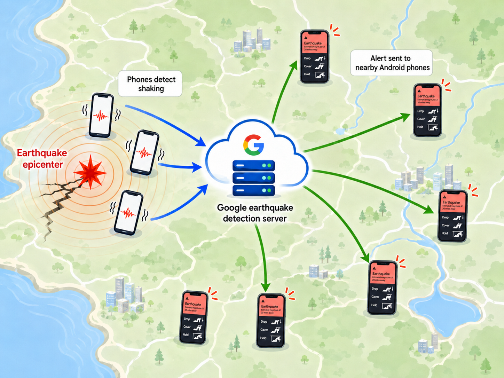
Does the system predict earthquakes?
No. It detects an earthquake that has already begun. Phones near the epicenter feel the early shaking; the system then tries to warn people farther away that the waves are heading toward them. This is why people at or very near the source may have little or no advance warning.
How much warning time will I get?
It can range from no advance warning at all to around two minutes in favorable cases. Distance from the earthquake source is one of the biggest factors. The system needs time to detect the earthquake and estimate where shaking will occur, but once an alert is generated, the message travels much faster than the seismic waves. People close to the epicenter may already be shaking; people farther away may have tens of seconds or more.
The Science study shows how wide that range can be:
- Philippines, M6.7: Be Aware warning times ranged from a few seconds near the epicenter to about 90 seconds at 400 km. People who experienced moderate to strong shaking received anything from seconds to about a minute.
- Nepal, M5.7: sparse phone coverage near the epicenter delayed detection, leaving no warning time within roughly 50 km. Many people who experienced moderate to strong shaking farther away received 10 to 60 seconds.
- Venezuela, M7.2 and M7.5: Android warnings reached 11.4 million people, giving users from seconds to up to two minutes of notice.[18]
These examples are not a promise. Warning time also depends on the earthquake's depth and size, how the fault ruptures, the density of usable phones near the source, detection speed and network delivery.[3]
How did the system get started?
The idea began during a one-week internal Google hackathon in 2015. Marc Stogaitis laid the groundwork for a global network that could use the sensors already inside phones, then continued refining it with a larger team. The first promising field data came when the prototype detected the 2018 magnitude 7.1 Anchorage earthquake.[7]
What's the history of the system?
During a one-week internal Google hackathon, Marc Stogaitis began exploring whether phone accelerometers could detect earthquakes, laying the groundwork for the Android Earthquake Alerts System.[7]
The first promising field data happened when it detected the magnitude 7.1 Anchorage earthquake.[7]
Android began distributing USGS ShakeAlert warnings in California. Phone-based detections initially improved rapid earthquake information in Google Search.[5]
Alerts generated by Android detections began rolling out in New Zealand and Greece.[2]
The Android-detected system was active in 98 countries.[2][3]
Android's alert coverage expanded across the United States; ShakeAlert remains the source in California, Oregon and Washington.[6]
02 · What you see
Alert types
The screen, sound and interruption level are matched to the shaking the system expects at your location.
Be Aware
Shaking expected
- A heads-up for expected MMI 3 or above shaking from an earthquake of magnitude 4.5 or greater.
- Appears as a notification, plays a distinctive sound and normally respects volume and Do Not Disturb settings.
- Take it seriously: shaking forecasts are difficult, and earthquakes can grow after the first estimate.
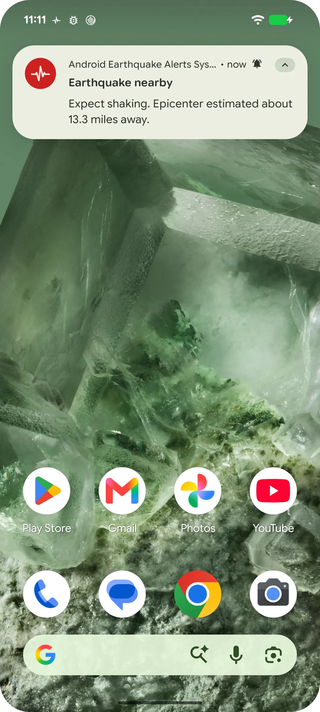
Be Ready
Moderate to strong shaking
- Designed to get your attention before noticeable shaking arrives.
- Sent to users expected to experience MMI 4 or greater during a significant earthquake.
- Plays a distinctive sound repeatedly and may break through Do Not Disturb settings.
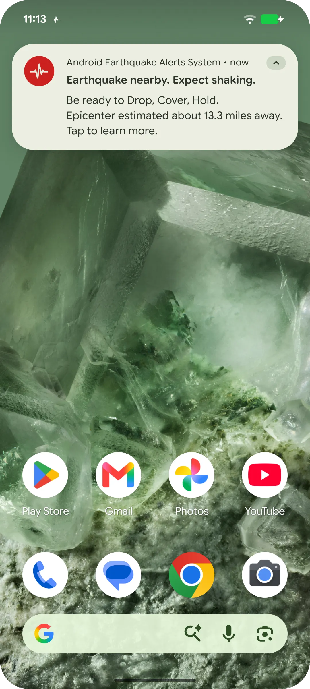
Take Action
Strong to extreme shaking
- For locations expected to experience MMI 5 or greater shaking.
- Takes over the screen, turns it on and plays a loud, distinctive sound.
- Breaks through Do Not Disturb so you can act immediately.
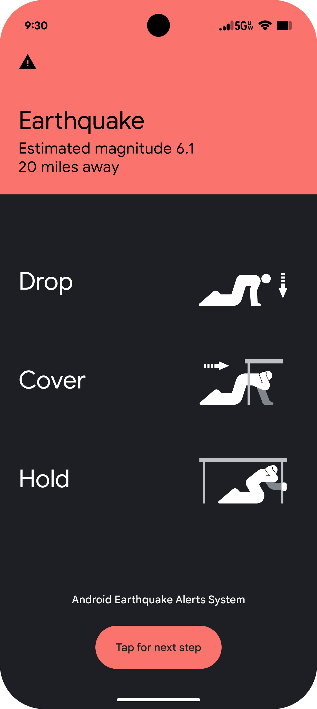
MMI means Modified Mercalli Intensity: a measure of how strongly the ground shakes at a particular place. An earthquake has one magnitude, but its intensity varies by location, distance, depth, geology and buildings.[1]
How can I see a Take Action demo?
On your phone, go to:
Settings›Safety & emergency›Earthquake alerts›See a demo
Warning: it is going to be loud. Try it before an emergency, ideally when the sound will not startle someone nearby.
What information is shown after the alert?
Tapping an alert opens an earthquake safety page. It includes a map with an early estimate of the earthquake's location and magnitude, practical post-event steps, and a warning to expect aftershocks. It can also link to additional event information and a feedback survey.[1]
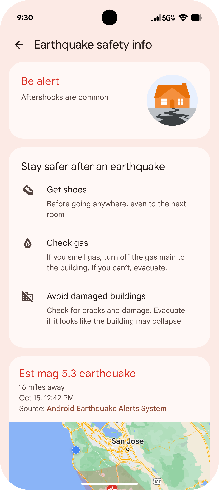
Can a Be Aware alert sound when Do Not Disturb is enabled?
By default, Be Aware respects Do Not Disturb. On devices that expose notification-channel controls, you may be able to change that behavior:
Settings›Notifications›App notifications›Google Play services›Personal Safety
Open Earthquake Early Warning Alert and Earthquake Early Warning Notification, then enable Override Do Not Disturb if your device offers it. Names and paths vary by Android version and manufacturer. Be Ready may break through Do Not Disturb; Take Action will.[1]
03 · Where it works
Coverage
The detection network is global. Alert delivery is enabled country by country.
Which countries can receive Android earthquake alerts?
The peer-reviewed study and Google's July 2025 research summary report that Android-generated alerts were active in 98 countries. Because availability can change, use the Android Help Center's live country list as the source of truth.[2][4]
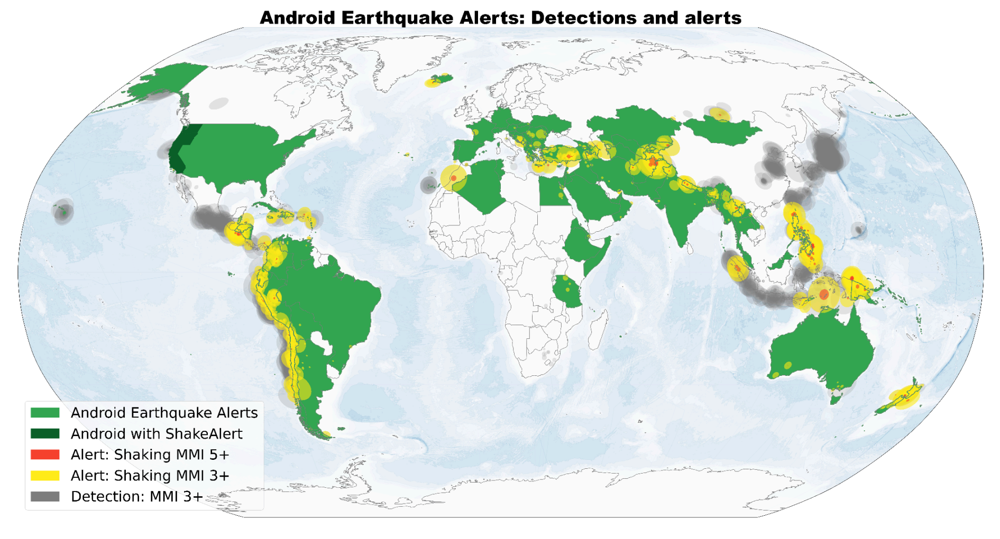
If the epicenter is in another country, can I still be alerted?
Yes. Alert eligibility depends on whether the system is enabled where your device is located, not whether the epicenter is inside the same border. If shaking from a nearby-country earthquake is expected to reach you, the event can still trigger an alert on your side of the border.[4]
What's the relationship between ShakeAlert and the Android Earthquake Alerts System?
They are separate systems that work together in California, Oregon and Washington. The USGS ShakeAlert system uses a network of ground-based seismic instruments to detect earthquakes and generate warnings. Android delivers those warnings directly to compatible devices in the affected area.
In the rest of the supported world - including other U.S. states - Android generally uses earthquake information from its own phone-based detection network. The alert experience is still part of the Android Earthquake Alerts System; what changes is the source of the earthquake information.[1][2][6]
Can the system detect an earthquake in the ocean?
Yes. When earthquake waves reach a populated shoreline, phones on land can provide enough measurements to detect an offshore event. The Science study found magnitude 4.5 earthquakes detected up to roughly 100 km offshore and reports that the system detects subduction-zone events tens to hundreds of kilometers offshore. Mid-ocean events far from phones are much harder or impossible for this network to detect.[3]
04 · Your device
Setup & battery
Receiving an alert and helping detect an earthquake are different jobs with different requirements.
Does detection use my battery? Is my phone always listening for earthquakes?
How do I enable Android Earthquake Alerts?
In a supported region, alerts should be on by default. To check or change the setting:
Settings›Safety & emergency›Earthquake alerts
If you do not see Safety & emergency, try Location › Advanced › Earthquake alerts. You also need Wi-Fi or cellular data turned on.[4]
How can I verify that my device is properly set up?
- Open Settings › Safety & emergency › Earthquake alerts. The screen will tell you whether alerts are enabled.
- Confirm Location is on; approximate location determines whether your device is in the expected shaking area.
- Confirm Wi-Fi or cellular data is on. The system requires a network connection.
- Make sure you have not disabled all notifications from Google Play services, including the Personal Safety earthquake channels.
- Check that you are in a supported country.
The system uses a privacy-preserving, coarse device location for alert delivery; it does not need a precise location to identify an individual user.[2][4]
05 · What the data says
Reach & accuracy
A global system gains reach from phones people already own - and learns from every new earthquake.
How many people have access to earthquake early warning?
About 250 million people had access to earthquake early warning in 2019. With Android's global rollout, the estimate grew to 2.5 billion - approximately a tenfold increase.[2][3]
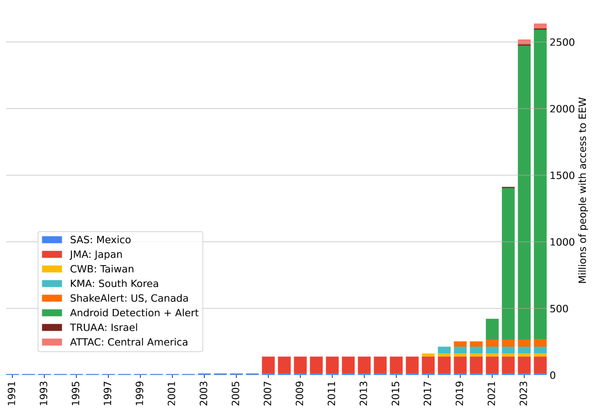
How accurate is the system?
There is no single accuracy number; detection, magnitude, location, start-time, shaking forecast and delivery are important metrics. The 2025 Science study provides several useful measures for the April 2021 through March 2024 evaluation period:
- 11,231 earthquakes detected, averaging 312 per month, from magnitude 1.9 up to 7.8.
- 1,279 Android-detected events generated alerts. Three were false alerts: two thunderstorms and one mass phone-notification event. The causes led to algorithm changes.
- Magnitude estimates improved: median absolute error in the first estimate fell from 0.50 to 0.25 over three years; its 90th-percentile error fell from 1.02 to 0.70.
- User feedback was strongly positive: in more than 1.5 million survey responses, 85% rated the alert "very helpful." Even among respondents who did not feel shaking, 79% rated it as very helpful.
Google's later public update reported more than 18,000 detections, alerts for more than 2,000 earthquakes and 790 million individual alerts delivered.[2][3]
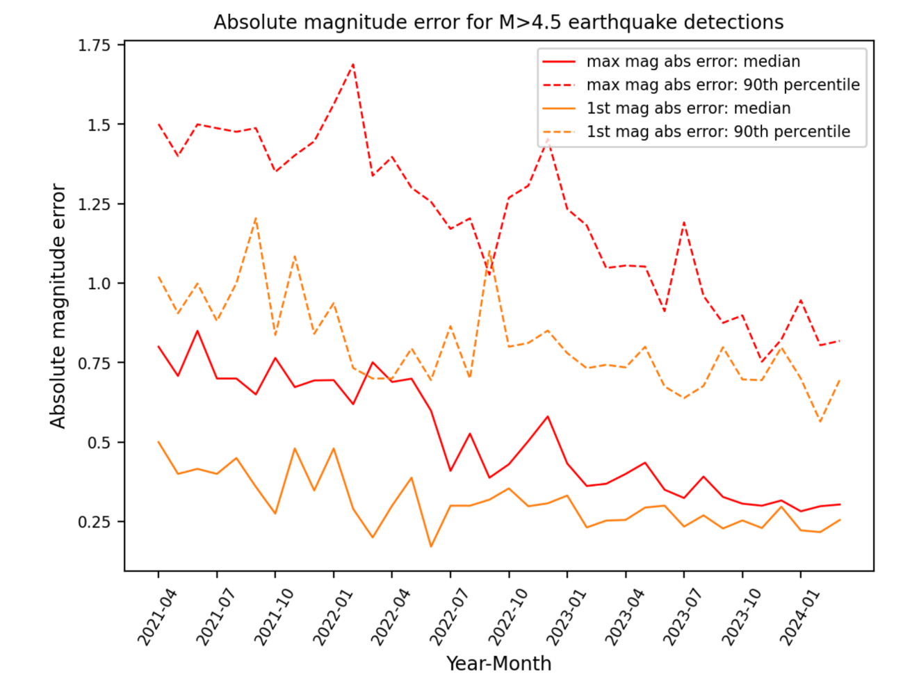
Why is estimating magnitude so difficult?
An early warning system must decide while the earthquake is still unfolding. In the first few seconds, only part of the fault may have ruptured and only a small fraction of the eventual energy may have been released. The largest events can start like smaller ones.
- Wait longer, and the estimate generally improves - but every second spent waiting is one less second of warning.
- Underestimate, and people who will experience dangerous shaking may not be warned.
- Overestimate, and an unnecessarily broad or urgent alert may weaken trust.
That is why an early warning magnitude will often differ from the final value published by an official seismic agency hours or days later. Final catalogs use the complete earthquake and far more data; an alert must use the incomplete beginning.[2][3]
Do people find the alerts useful?
Yes. The study's opt-in survey is not a randomized sample, but it is unusually large: 1,555,006 responses. In addition to the 85% "very helpful" result, 92% of Take Action recipients who answered the shaking question reported strong shaking, and 28% of Take Action recipients reported Drop, Cover and Hold On - the most common action for that alert.[3]
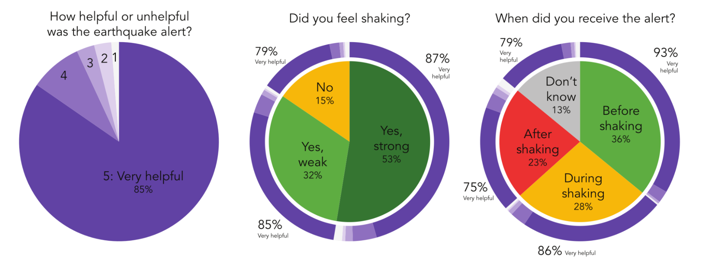
06 · In the field
Example events
Warning time depends on where the quake begins, where phones are available and how far each recipient is from the source.
Up to a minute for moderate shaking
The first alert went out 18.3 seconds after origin time. Nearly 2.5 million phones were alerted. People in the strongest shaking zone received up to about 15 seconds; people farther away who experienced moderate shaking received up to roughly a minute.
100,000+ Take Action alerts
Ten million alerts
The first alert was generated 15.6 seconds after the earthquake began. Sparse phone coverage near the epicenter delayed detection, but many people who experienced moderate to strong shaking received roughly 10 to 60 seconds of warning.
10m+ Be Aware alerts
Watch a detection unfold, phone by phone
The system generated its first alert 8.0 seconds after origin time and delivered more than 11 million alerts. People who experienced moderate to strong shaking received from a few seconds to about 20 seconds of warning.
First alert: 8.0 seconds · 11m+ alerts delivered
A major offshore event
PHIVOLCS reports that the June 8 Sarangani earthquake was a magnitude 7.8 event centered offshore near southern Mindanao. Public videos captured Android alerts in the affected region. Audited Android detection timing and delivery totals have not yet been published, so this guide does not infer them from social posts.[11]
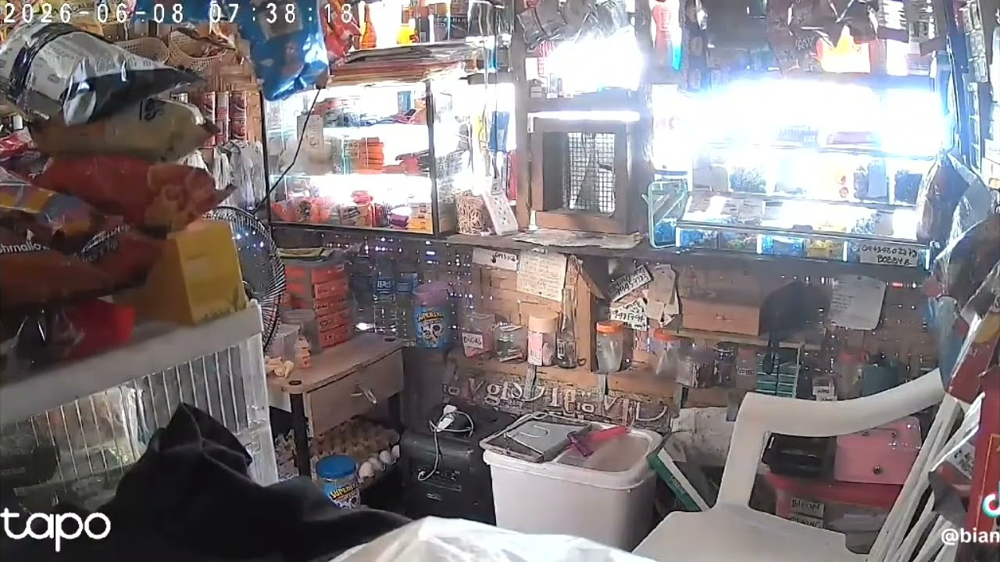
More public clips: Facebook 1 · Facebook 2 · News5 on X
Official event magnitude: M7.8
11.4 million people warned in a twin event
Two major earthquakes struck northern Venezuela on June 24. The New York Times reports that Android warnings reached 11.4 million people, giving recipients from seconds to up to two minutes of notice. People farther from the earthquakes were more likely to receive an alert before shaking began.[13][18]
Public videos and posts show individual experiences during the earthquakes; they are not audited measurements of system performance.
More public footage: World Cup shopping-center evacuation · Family moves toward the exit
What people shared
11.4m people reached
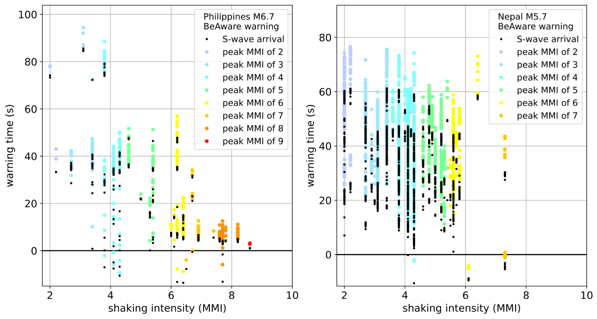
07 · Limits
Why an alert may not arrive
The system tries to alert as many people as possible for as many earthquakes as possible. It cannot reach everyone - no earthquake early warning system can.
You are very close to the source
The system does not predict the future. It needs phones to feel motion, enough reports to agree, and time to calculate the event. Near the epicenter, initial shaking may arrive before the alert - although a warning before peak shaking can still be possible.
Alerting is not enabled where you are
The detection network may observe an event even where user alerts are not active. Check the Android Help Center's current country list.[4]
Location is off
Without location, the system cannot determine that your device is inside the affected region. Alerting uses a privacy-preserving coarse location, not a precise personal location.[2]
Your device or platform is not supported
You need a compatible Android phone, watch or tablet with Google Play services support. This Android system does not itself send alerts to iPhones.
Earthquake alerts are turned off
They should be on by default in supported regions. Verify the switch under Settings › Safety & emergency › Earthquake alerts.
Google Play services notifications are blocked
Be Aware and Be Ready notifications depend on notification-channel settings. Check Google Play services › Personal Safety and confirm the earthquake channels are enabled.
The earthquake was not detected
Detection depends on the event's physics, nearby phone density, phone noise and working connectivity. Offshore and sparsely populated areas are especially challenging.
The system underestimated the magnitude
Alerts are issued when the estimated magnitude reaches 4.5 or above. If the system underestimates an earthquake and its estimates remain below that threshold, it may not send an alert.
Detection came too late for your location
Even a correctly detected event may not leave enough time for advance warning at every location. Android Help explicitly notes that an alert may arrive before, during or after shaking begins.[4]
Delivery was delayed
Millions of devices may need to be reached in seconds. Network congestion, server-to-device delivery, connection type and a sleeping or offline device can all add delay.
A network outage occurred
Detection and delivery both require connectivity. A pre-existing outage - or infrastructure damage early in the event - can interrupt phone reports and outbound alerts.
Wi-Fi and cellular data were both off
At least one must be enabled. A Temblor analysis of a California event found that devices on Wi-Fi were more likely to receive a fast alert, though performance varies by network and event.[10]
08 · Make a plan
Protective actions
An alert is useful only if you already know what you are going to do with the time it gives you.
When should I Drop, Cover and Hold On?
In the United States, USGS recommends:
If you are indoors
Stay there. Get under a desk or table and hold on, or move against an inside wall. Keep clear of windows, fireplaces, kitchens and heavy furniture. Do not rush downstairs or outside while the building is shaking.
If you are outside
Move into the open, away from buildings, power lines, chimneys and anything else that may fall.
If you are driving
Pull over carefully, away from bridges, trees, posts, power lines and signs. Stay inside the vehicle until shaking stops, then watch for damaged pavement and fallen rock.
Mountains or coast
Watch for landslides and falling rock in mountainous areas. Near the ocean, follow local tsunami guidance and be ready to move inland or uphill after strong or long shaking.
Drop, Cover and Hold On protects against falling objects, reduces the chance that violent back-and-forth motion will throw you down, and avoids the dangerous exterior zone where glass, masonry and facades may fall.[8][9]
When should I evacuate a building?
Follow the plan for your building and the instructions of your local authorities. In many regions, leaving during shaking is more dangerous than sheltering because exits, stairs and the area immediately outside can be exposed to falls and debris. In other settings - particularly vulnerable masonry or concrete buildings with a very short, safe route to an open assembly area - local guidance may favor immediate evacuation from lower floors.
- Mexico: guidance reported from Mexico's Civil Protection authorities says people on the ground, first or second floor may evacuate in an orderly way when the route and assembly point are safe, while people on the third floor or above should shelter in a lower-risk interior location until shaking stops. It also stresses evaluating falling glass, trees and old facades.[15]
- Peru: INDECI guidance reported by the state news agency distinguishes a first-floor route with direct access to a safe open area from upper floors, where people should use identified internal safety zones and evacuate after motion stops.[16]
Wood-framed buildings often flex differently from older unreinforced masonry, brick or concrete buildings, but construction type alone is not enough to make a split-second decision. Learn your local guidance, identify structural and nonstructural hazards, practice your route, and decide in advance what you will do in each place you regularly occupy.
So what is the short answer?
I cannot give one universal recommendation. Check what your local government and emergency-management office recommends, and have a plan for the different spaces you use. If an alert arrives, use the warning time to carry out that plan - not to begin inventing one.
09 · Official links
To Learn More
These official Google resources are the best places to continue reading and to check current product information.
10 · References
Sources
Primary and official sources are used wherever possible. Figures and product screens are reproduced from the linked public pages.
- Google Crisis Resilience: Android early earthquake warningsCurrent alert definitions, product screens, detection overview and safety information.
- Google Research: Android Earthquake Alerts - A global system for early warningPublic research summary, global statistics, maps, performance figures and examples.
- Allen et al., Global earthquake detection and warning using Android phones, Science (2025)Peer-reviewed methods, evaluation and user-response study. Read the supplied PDF copy.
- Android Help: Get alerts for nearby earthquakesLive country list, requirements, limitations and settings instructions.
- Google: Earthquake detection and early alerts, now on your Android phone (2020)Initial launch and technical introduction by Marc Stogaitis.
- Google: Android Earthquake Alerts now available across the U.S.United States expansion and the relationship with USGS ShakeAlert.
- The Washington Post: Your Android phone is getting better at warning you about earthquakesOrigins of the system, interviews and independent overview. Read the supplied reprint.
- U.S. Geological Survey: What should I do during an earthquake?U.S. protective-action recommendations for indoors, outdoors, driving, mountains and coastlines.
- NOAA / National Weather Service: During a tsunamiOfficial U.S. tsunami safety guidance.
- Temblor: MyShake warning delivery analysisIndependent examination of factors associated with earthquake warning delivery times.
- PHIVOLCS: Primer on the June 8, 2026 M7.8 Offshore Sarangani earthquakeOfficial Philippines event description and parameters.
- Public video showing an Android alert during the 2026 Philippines earthquakeLinked as an observation, not as a source for audited system performance.
- PAHO: Venezuela earthquakes situation reportEvent magnitudes and regional impact for the June 24, 2026 sequence.
- Harvard FAS: The smartphone system that detected seismic activity in VenezuelaPublic account of Android detection and 11.4 million alerts.
- Infobae: Mexico Civil Protection guidance by floorReported CNPC guidance on evacuation and sheltering decisions.
- Agencia Andina: INDECI earthquake preparation guidancePeruvian state news coverage of official safety-zone and evacuation planning.
- USGS: Drop, Cover and Hold On videoOfficial 50-second public-domain protective-action demonstration.
- The New York Times: How Phones Alerted Millions Before Earthquakes Shook VenezuelaReported warning times, alert reach and the role of distance during the June 2026 earthquakes.
Last fact-checked August 11, 2026. Alert availability, settings paths and product behavior can change; consult Android Help and your local emergency-management authority for current guidance.